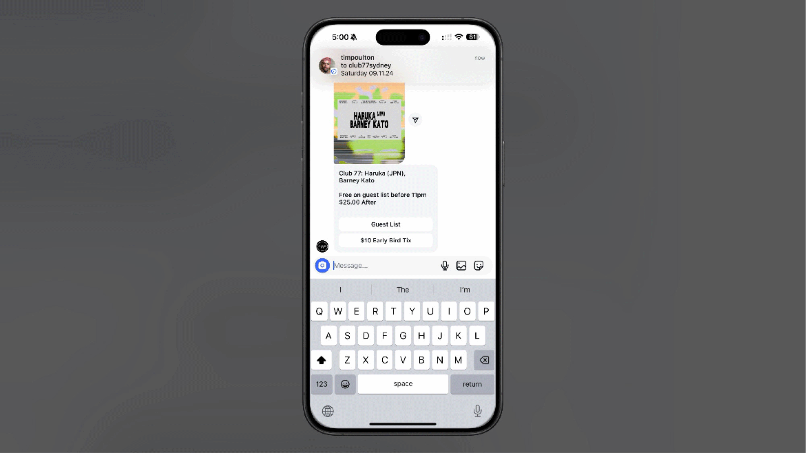
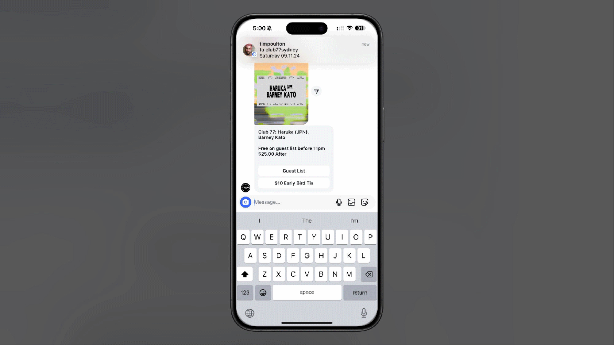

ManyChat Automation for Sydney Nightclub's Guest Management
Automated Guest List, Ticketing & Messaging
 

Developed a ManyChat guest list automation system for a Sydney-based nightclub. Integrated the booking software's API to dynamically update ticketing and event details, manage guest lists, and streamline data collection. Implemented a patron rating scale to assign points based on customer interactions, enabling targeted automated messaging. This solution enhanced guest management efficiency, improved customer engagement, and increased high-value patron retention.